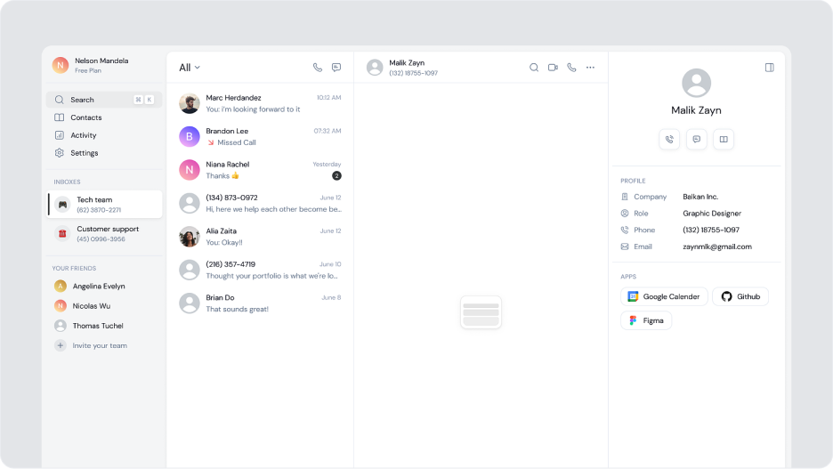
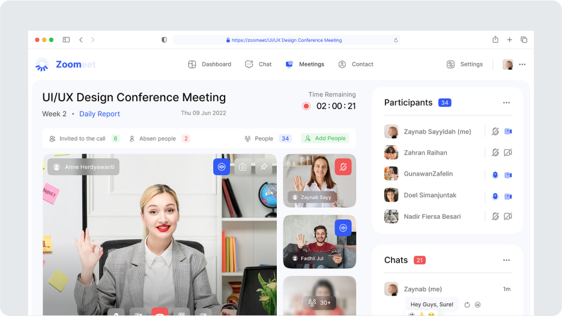
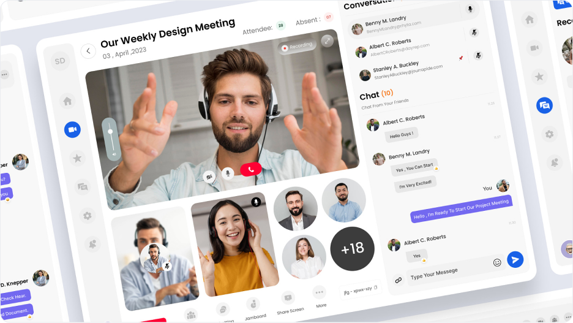
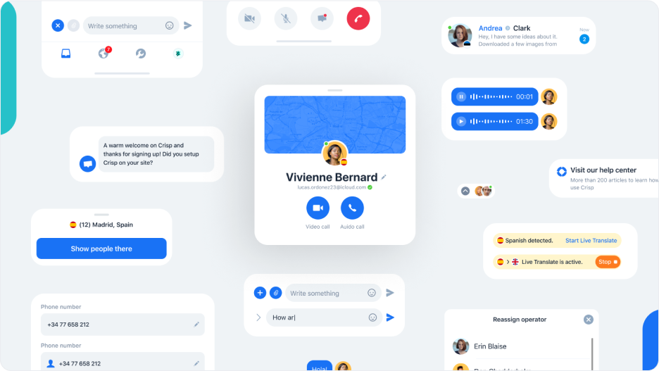

Project Overview
Our customer is a European healthcare provider rendering technology-driven care and biomedical research with 5000+ employees on board. With modern equipment and professional staff, they provide personalized, high-quality medical treatment through a vast network of hospitals and clinics. Detailed information about the client cannot be disclosed under the provisions of the NDA.
Challenge
Challenges with CRM data migration across EHRs, billing systems and legacy databases Our customer, a multi-speciality healthcare provider with dozens of branches across Europe, faced challenges in consolidating patient information and streamlining medical processes. Despite their business growth, they struggled to maintain data quality and consistency, failing to integrate proprietary CRM with external sources, provide better patient care, and improve hospital staff work. In particular, medical data was spread across electronic health records (EHRs), billing systems, and legacy databases, resulting in information silos and difficulty accessing patient records. Also, their customer relationship management software lacked many useful features, such as appointment scheduling, tracking patient visits, and billing. Therefore, accessing the customer’s obsolete CRM was time-consuming and cumbersome, negatively impacting patient satisfaction and operational efficiency.
Solution
Implementing Microsoft Dynamics CRM in the healthcare industry Innowise replaced the customer’s legacy CRM with a centralized repository, providing an all-around migration of patient information, documents, tasks, activities, and key metrics to Microsoft Dynamics 365. We employed Microsoft CRM to create a unified system for storing and managing patient information, including demographic data, medical history, and treatment plans. Additionally, our software engineers implemented functionality to schedule appointments, track patient visits, and manage billing and insurance. Our team also integrated Microsoft Dynamics 365 with external services and systems, such as electronic medical records and laboratory results, to deliver a comprehensive view of a patient’s care throughout the healthcare pipeline. Thus, we customized a HIPAA-compliant, feature-rich CRM system for storing and managing medical data, identifying patterns and trends (patient demographics, readmission/mortality rates, resource utilization, etc.), and providing robust reporting and analytics functions to assist physicians in making informed decisions and improving patient care. Within the healthcare CRM solution, we implemented the following user roles: Administrator is responsible for managing user accounts, providing access, setting up security protocols, and configuring the CRM to meet the needs of medical staff. Medical staff who access and edit patient information, conduct examinations, prescribe treatment, and produce analytical reports for administrative purposes. Billing & insurance staff who manage billing information and generate invoices and statements. Receptionists are responsible for scheduling appointments, managing patient visits, handling cancellations, and dealing with no-shows.
Patient profiles
We first consolidated all patient-related information in one place, including personal and insurance data, patient history, scheduled appointments, treatment plans, prescribed drugs, test results, and more. Within this module, clinicians can access patient profiles, e-mails, pre-visit questionnaires, post-treatment surveys, confirmations, feedback, etc., reducing administrative burdens and ensuring qualitative care.
Appointment management
Our project team tailored the CRM to optimize appointment scheduling based on the availability of doctors, medical equipment, and examination rooms. Once a new appointment is created, the CRM sends automated notifications to the patient and physician confirming the appointment and providing treatment details. Whenever an appointment slot is unavailable, or a cancellation occurs, Microsoft Dynamics 365 maintains patient waitlists, automatically notifying patients about rescheduling. Also, patients receive reminders via SMS, email, or phone calls before visits, reducing the number of no-shows and improving overall resource allocation.
Additionally, our CRM is equipped with priority settings, allowing medical staff to prioritize urgent cases and ensure critical patients receive prompt care. Following a doctor’s visit, patients receive a link to a post-appointment survey to give feedback about treatment quality, facility comfort, and communication with the clinician.
Billing and insurance
We integrated a CRM system with a billing option that automatically generates and sends bills to patients for services rendered, consolidating charges from multiple visits. We ensured secure instant payments for healthcare services without the slightest risk of financial fraud or data leakage. After a patient receives medical treatment, the customer’s administrators generate an insurance claim, considering the services provided, diagnosis codes, and other relevant information. The Microsoft Dynamics 365 CRM then submits the claim electronically to the insurance provider for reimbursement.
Advanced analytics
Our seasoned developers customized reports and dashboards to provide insights into patient demographics, clinical outcomes, revenue generation, and other relevant metrics, stimulating informed decisions and improving patient care.
Process
During the discovery phase, our business analysts worked closely with the customer’s stakeholders and healthcare consultants to gather and document project requirements, including understanding the patient journey, appointment scheduling, billing procedures, a nd third-party integrations. Based on this data, our developers configured Dynamics CRM to meet the client’s needs and deliver a tailored solution. To make the system intuitive and visually appealing, our UI/UX designers developed comprehensive interfaces allowing medical staff to handle their working routines seamlessly. Meanwhile, DevOps engineers managed the system’s deployment and provided ongoing support and maintenance, while QA specialists ensured hassle-free CRM performance, addressed arising issues, and tested new features. Additionally, we implemented robust security measures, access controls, and encryption to safeguard sensitive information in compliance with HIPAA and other healthcare regulations. Currently, the project is in the post-launch phase, with the customer planning to scale the Dynamics CRM system to accommodate new clinics and hospitals.
Results
195 000+
total number of users
49 000+
new users after the upgrade
42 000+
orders via mobile app
Our solution comprises a finely tuned ensemble of features, each strategically designed and implemented to address the client’s unique challenges and usher in a new era of operational efficiency and growth. Our Odoo implementation company did not just implement a standalone ERP but underwent a multifaceted overhaul, modernizing all aspects of the company’s marketing activities, affecting profits.
Technologies
Front-end
HTML, CSS, JavaScript, React, Dialogflow, Rasa
Back-end
Python
Platform
Odoo ecosystem
Integration
Apache Kafka, RabbitMQ, Google Ads API
Database
PostgreSQL
QA
Selenium, JMeter, Pytest
Team
Diana Alexeeva
Project Manager
Artem Rybin
Backend Lead
Nikita Vyaskov
Backend Senior
Alexander Khiger
iOS Lead
Ilgam Ayupov
Android Lead
Dmitry Volkov
DevOps
Nikita Opalinsky
UX/UI Design